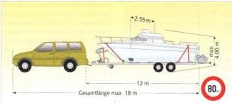
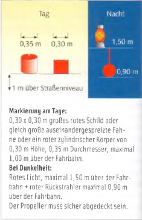
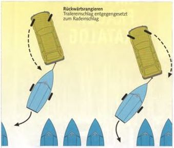

Ein kleines Motorboot hat einen entscheidenden Vorteil: Man kann es auf einen Trailer genannten Bootsanhänger packen, ihn am Pkw ankuppeln und ist damit revierunabhängig.
Trailer erhalten ein eigenes polizeiliches Kennzeichen. Sie müssen Brems-, Schluss- und Blinkleuchten, Rückstrahler und Nummernschildbeleuchtung haben und ein Typenschild des Herstellers.
► Trailer bis 3,5 t müssen alle 2 Jahre, Trailer darüber jedes Jahr zu TÜV oder DEKRA.
Kleinere Trailer brauchen keine eigene Bremsvorrichtung zu haben, wenn der Zugwagen eine Allradbremse besitzt und das Gesamtgewicht von 750 kg nicht überschritten wird.
Im Übrigen gilt:
► Anhänger und Boot dürfen nicht mehr wiegen als 0,5 Pkw-Leergewicht + 75 kg.
Größere Trailer mit mehr als 750 kg Gesamtgewicht benötigen eine eigene Bremsvorrichtung mit Abreißsicherung.
Die zulässige Anhängelast wird vom Autowerk festgelegt und setzt sich zusammen aus:
► Bootsgewicht (mit Ausrüstung) + Eigengewicht des Trailers abzüglich maximaler Stützlast (sie wird der zulässigen Anhängelast des Zugwagens zugerechnet).
Eine Verkehrskontrolle ist berechtigt, das Gespann kostenpflichtig wiegen zu lassen. Die Kfz-Versicherung schließt Schäden ein, die durch den Trailer verursacht werden, solange er mit dem Zugfahrzeug verbunden ist. Bei Auslandsreisen wird für den Trailer eine eigene grüne Versicherungskarte fällig.

Vorschriften für den Trailertransport
► Höchstgeschwindigkeit: 80 km/h
► Maximale Gesamtlänge des Gespanns: 18 m
► Maximale Länge Anhang: 12 m
► Maximale Höhe: 4,00 m
► Maximale Breite: 2,55 m
► Boot und Ausrüstung dürfen 1,50 m über die Schlussleuchten hinausragen, innerhalb von 100 km bis zu 3,00 m.

Markierung am Tage: 0,30 × 0,30 m großes rotes Schild oder gleich große auseinandergespreizte Fahne oder ein roter zylindrischer Körper von 0,30 m Höhe, 0,35 m Durchmesser, maximal 1,00 m über der Fahrbahn.
Bei Dunkelheit: Rotes Licht, maximal 1,50 m über der Fahrbahn + roter Rückstrahler maximal 0,90 m über der Fahrbahn.
Der Propeller muss sicher abgedeckt sein.
Eine hervorragende Möglichkeit, sich mit der Fahrpraxis vertraut zu machen, bieten die vom ADAC angebotenen Gespannfahrkurse. Die Höchstgeschwindigkeit ist in Deutschland auf 80 km/h beschränkt, mit Ausnahmegenehmigung auf 100 km/h. Das Boot sollte so auf dem Trailer liegen, dass die maximale Stützlast auf der Kupplung erreicht wird. In der Regel 50 kg oder 75 kg. Ist die Ladung zu bug- oder hecklastig, kann es zu unangenehmem Aufschaukeln kommen, und das Lenkverhalten des Zugwagens wird unsicher. Eine Bugstütze, kombiniert mit einer Seilwinde zum Auf- und Abslippen, verhindert ein Verrutschen in der Längsrichtung speziell bei harten Bremsmanövern.
Beim Überholen muss einkalkuliert werden, dass die Beschleunigung durch den Anhang geringer geworden ist. Der Überholweg wird mindestens doppelt so lang wie solo. Achtung! Beim Passieren von Lastern entsteht ein spürbarer Sog, der nach der Vorbeifahrt abrupt abreißt, sodass das Gespann leicht ins Wedeln geraten kann, wenn man nicht darauf vorbereitet ist.
Bremsungen sind frühzeitig und weich einzuleiten. Der Bremsweg mit Gespann kann bis zum Doppelten des normalen Bremsweges des unbelasteten Wagens betragen.
Gleichmäßige Lenkbewegungen beim Fahren erhöhen ebenfalls die Sicherheit. Schaukelt sich der Hänger einmal auf, sodass er zu wedeln beginnt, sofort bremsen und auf keinen Fall gegenlenken.

Rangieren mit dem Trailergespann: Ein Umdenken erfordern Rückwärtsmanöver. Das Lenkrad jeweils entgegengesetzt der Richtung einschlagen, in die der Anhang bugsiert werden soll. Lenkrad nach rechts = das Heck des Wagens dreht nach rechts = der Trailer nach links. Oder umgekehrt.
Leichtere Boote kann man slippen. Das heißt, direkt vom Trailer über eine Sliprampe zu Wasser bringen und auf dem gleichen Wege herausziehen. Doch oft scheitert das Slippen an geeigneten Rampen. Entweder sind sie zu steil, zu kurz, zu flach oder durch starken Algenbewuchs unpassierbar.
Meistens wird man mit dem Trailer ins Wasser fahren müssen.
Vor dem Wassern unbedingt die elektrische Anlage abnehmen. Sie ist nicht wasserdicht. Auch die absolut wasserdichte Radnabe gibt es kaum. Gegen Wasser hilft nur gründliches Abschmieren.
Nach der Saison sollte man die Radlager in einer Fachwerkstatt checken lassen.
Auch die Bremsen leiden unter dem Wasserbad. Dagegen hilft nur sofortiges Trockenbremsen: Mit dem Trailer aus dem Wasser und mehrmals kurz hintereinander bremsen. Bremszüge oder -gestänge sind ebenfalls manchmal wasseranfällig und neigen dann zum Blockieren.
Meist hilft ein kurzes Rückwärtsfahren, um die Blockierung zu lösen. Da sie aber beim nächsten Bremsen wieder auftreten kann, sofort eine Werkstatt aufsuchen.
Schwerere Boote lassen sich ohnehin nicht slippen, sondern müssen gekrant werden.